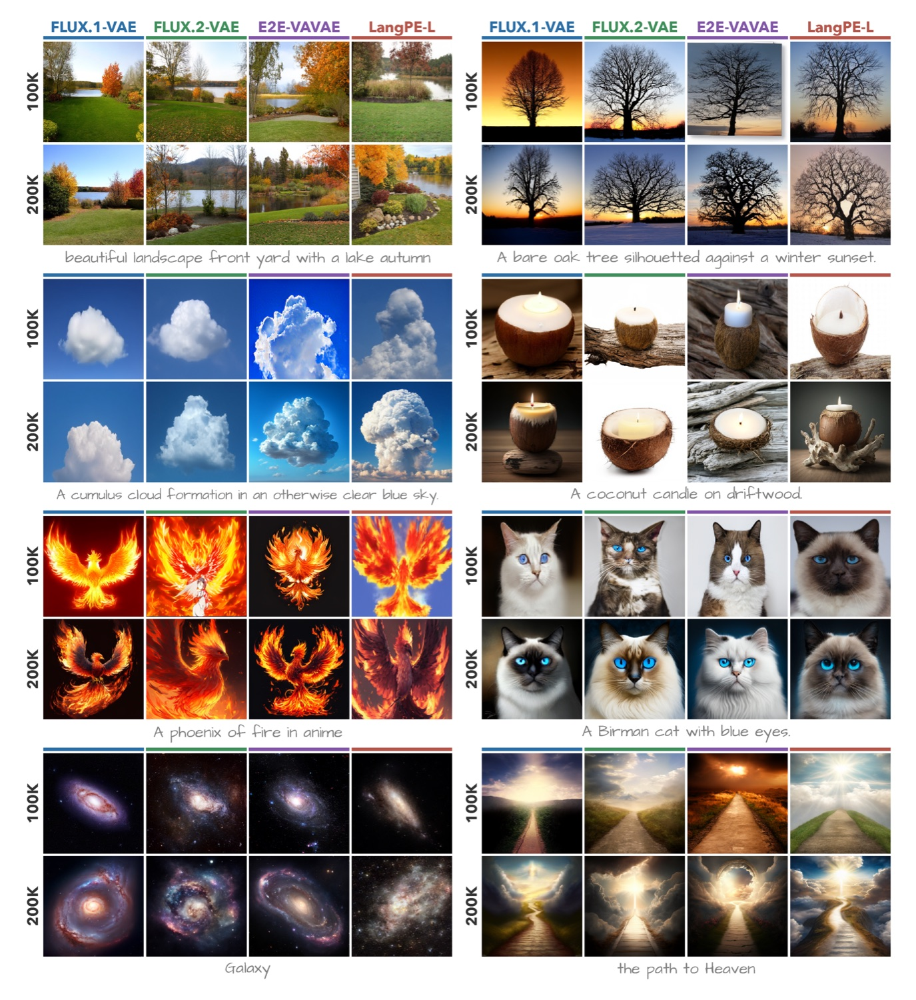
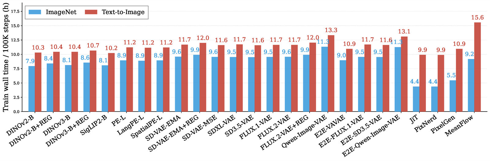

TL;DR:NanoGen is a unified framework that trains and evaluates diffusion transformers across ImageNet and text-to-image with only roughly 12 lines of config change. We use it to show that method rankings on ImageNet do not transfer to T2I, and introduce DiffusionBench, a holistic benchmark for DiT research.
Matching State-of-the-Art Performance: The unified NanoGen training framework matches state-of-the-art DiT methods on ImageNet.
Effortless ImageNet → T2I: Going from ImageNet to text-to-image takes only roughly 12 lines of config change.
Holistic Evaluation: A systematic comparison of 25 methods across ImageNet and T2I under various metrics.
Diffusion transformer (DiT) research on image generation has converged to a single evaluation setup: class-conditional generation on ImageNet. While methods improve the FID and related metrics, it is increasingly unclear whether they reflect real progress in generative modeling. The natural alternative, i.e., text-to-image (T2I) generation, is perceived as too costly or inconvenient to train and evaluate and is often skipped. We argue that this perception no longer holds. We introduce NanoGen, a unified training and evaluation framework that matches state-of-the-art DiT baselines on ImageNet and, with 12 lines of configuration change, also trains competitive text-to-image models.
§A Unified Framework: We release NanoGen, a unified DiT training framework that matches state-of-the-art methods on ImageNet and extends to text-to-image training with roughly 12 lines of config changes.
§ImageNet Rankings Don't Transfer: We show empirically that ImageNet rankings do not transfer reliably to text-to-image, with magnitudes large enough to flip conclusions from ImageNet.
§A Holistic Benchmark: We incorporate both tasks into DiffusionBench, present results across many existing methods, and argue for its adoption as a default DiT benchmark.
Quickstart
NanoGen supports training and evaluation across tasks (ImageNet, T2I, ...) through a single
interface. Below are the essentials. Full details in the
GitHub repo.
Switching from ImageNet to text-to-image is a config change, not a code change —
roughly 12 lines. Only two blocks move: the conditioning module
and the dataset. The backbone, optimiser, training loop, and evaluation harness stay identical.
ImageNetimagenet.yaml
# stage_1, stage_2, transport, sampler,# training, misc ... shared across tasksconditioning: # class label type: "label" cfg_dropout_prob: 0.1 arch: num_t_tokens: 4 num_c_tokens: 8 # no text encoder # for class # conditioningdataset: target: "imagenet" type: "hf" data_dir: "./data/imagenet" split: "train" condition_type: "label"
Stage 2 training configs run online evaluation during training. For standalone evaluation of a released checkpoint, use the sampling/ configs — each embeds the trained checkpoint and eval-time guidance, so the weights load automatically:
NanoGen is a diffusion model training and evaluation framework that supports both class-conditional ImageNet generation and text-to-image generation under a single codebase. Its goal is to make the additional cost of evaluating a method on the T2I task as low as possible
Design principles.
Across ImageNet & T2I, we use the same:
backboneoptimisertraining loopevaluation harnessconfig format
Switching between tasks requires only two changes:
datasetconditioning module
Backbone architecture. A standard diffusion transformer with three deliberate modifications: a Decoupled Diffusion Transformer (DDT) backbone whose encoder-decoder split increases effective width without the quadratic FLOPs cost of a uniformly wide DiT; no AdaLN in the encoder; and in-context conditioning, feeding all conditioning (including the timestep) as tokens, so adapting to a new task just means changing those tokens.
Task-specific conditioning tokens. The only per-task difference:
ImageNet: 4 timestep + 8 class tokens
T2I: 4 timestep + 256 text tokens
Training recipe.
Setup
Training
Resolution: 256×256
Iterations: 100K
Batch size: 1024
Optimizer: AdamW, learning rate 2×10-4 with linear decay
Sampler: 50-step Euler
ImageNet
Conditioning: 4 timestep + 8 class tokens
Guidance: without CFG / per-method best CFG (applied on the t-interval [0, 0.9])
Text-to-image
Data: BLIP-3o (JourneyDB, Long-Caption, and Short-Caption splits)
Conditioning: 4 timestep + 256 text tokens from a frozen Qwen3-0.6B encoder
Guidance: classifier-free guidance scale 6.0
ImageNet Reproducibility Validation
We first confirm that NanoGen establishes trustworthy ImageNet baselines, where the implemented methods match reported numbers in their papers. We re-implement and re-train six existing methods, including three latent-space (RAE, two E2E-VAEs) and three pixel-space methods (PixNerd, JiT, PixelGen). We observe that the NanoGen results are competitive with published numbers and sometimes slightly superior.
Method
Epochs
#Params
Prediction
NFE
with Guidance
FID ↓
IS ↑
Latent-space
RAE (DINOv2-B)
80
839M
v
50
×
2.16
214.8
Ours
80
847M
v
50
×
2.07
213.5
E2E-VAVAE
80
675M
v
250
×
5.26
–
Ours
80
680M
v
250
×
3.64
152.5
E2E-VAVAE + REPA
80
675M
v
250
×
3.46
159.8
Ours
80
681M
v
250
×
2.88
165.4
Pixel-space
PixNerd
160
458M
v
100
✓
2.64
297.0
Ours
160
446M
v
100
✓
2.58
299.3
JiT
200
131M
x
50
✓
8.62
–
Ours
200
88M
x
50
✓
5.49
231.6
PixelGen
40
459M
x
50
×
7.53
131.7
Ours
40
458M
x
50
×
7.52
123.5
ImageNet-256 reproducibility across latent-space and pixel-space methods
DiffusionBench: A Holistic Benchmark
ImageNet generation. The best FID (1.37) is achieved by FLUX.2-VAE, followed by the end-to-end REPA-E VAEs at around 1.5–1.6. The RAE family is slightly higher, with the better ones around 1.7–1.9 (DINOv3-B is the best RAE at 1.74). Traditional VAEs such as SD-VAE and SD3.5-VAE, along with the pixel-space methods, lag behind, though at 80 epochs this gap is largely driven by convergence speed and should narrow with longer training. Toggle guidance (with / without CFG) and the metric (FDr / MIND).
Guidance:
Distributional metric:
Method
FID ↓
IS ↑
FDr ↓MIND ↓
Inception
ConvNeXt
DINOv2
MAE
SigLIP
DINOv2-B
1.962.14
224.1211.9
1.221.322.032.54
2.202.3366.4970.53
3.263.1427.7426.52
6.196.330.430.44
7.767.566.526.30
DINOv2-B + REG
1.842.08
236.2207.7
1.151.291.902.23
2.152.4564.3076.20
3.213.2627.4027.98
6.436.420.440.45
7.717.826.436.47
DINOv3-B
1.742.15
244.2200.8
1.091.331.802.16
2.102.8265.8397.15
3.303.8929.3533.62
6.536.800.430.45
7.668.176.036.45
DINOv3-B + REG
1.782.15
248.1204.4
1.111.321.882.35
2.122.7165.8190.39
3.413.7929.9732.33
6.546.710.430.45
7.888.116.176.38
SigLIP2-B
2.613.48
222.9179.4
1.592.111.862.45
3.014.2097.91162.71
7.338.5576.0185.81
10.6110.970.870.90
11.3811.769.8910.15
PE-L
2.843.08
221.5206.6
1.721.862.863.05
2.803.1590.0797.69
5.916.1756.8058.40
10.9011.010.880.89
9.889.878.198.08
LangPE-L
2.462.76
196.7182.2
1.481.652.122.53
2.993.48108.83138.39
6.276.6661.8664.01
8.878.970.680.69
10.2410.289.039.07
SpatialPE-L
1.863.61
247.1160.4
1.162.181.352.35
1.824.1755.46206.52
4.677.3045.7969.92
6.627.010.510.54
8.5710.747.239.16
Latent-space (VAE)
SD-VAE-EMA
2.4310.16
259.6113.4
1.385.972.929.56
1.9210.1448.52688.82
7.7118.1787.44245.95
6.9411.110.620.99
19.1535.4320.3938.87
SD-VAE-EMA + REG
2.345.39
271.6162.7
1.323.142.043.45
1.745.1455.02246.05
7.2411.3084.72145.13
7.559.580.690.87
18.4725.6320.1428.41
SD-VAE-MSE
2.5610.15
259.7112.4
1.455.973.109.34
2.1510.3655.66676.48
7.6117.8486.97243.23
7.8212.030.701.07
21.8238.1925.0143.99
SDXL-VAE
3.0712.88
256.0104.7
1.697.503.3812.96
2.7412.5870.85858.54
9.2621.50109.22297.59
8.6413.570.751.21
21.5540.3922.6644.20
SD3.5-VAE
2.6410.18
262.9111.7
1.515.963.048.50
2.1410.2175.53634.85
7.7617.9789.20240.52
6.1910.390.550.96
15.1630.8514.0430.70
FLUX.1-VAE
3.5515.75
245.786.6
2.049.283.3714.81
3.8916.66107.701072.69
9.2523.27105.18316.55
8.1914.020.821.41
19.5441.4618.6242.58
FLUX.2-VAE
1.374.53
272.7146.9
0.892.760.902.53
1.074.6524.98234.79
4.328.5643.5996.75
3.905.150.310.41
10.7517.419.8416.46
FLUX.2-VAE + REG
1.444.19
294.1155.8
0.922.561.062.11
0.954.0637.56183.74
4.277.9142.4788.65
3.915.170.310.41
10.1716.749.4215.82
Qwen-Image-VAE
3.0110.86
238.9108.9
1.856.522.759.34
4.5613.25159.26804.53
9.7719.78118.42270.50
9.1913.450.901.31
25.4641.5125.9744.01
E2E-VAVAE
1.654.27
275.4147.6
1.082.642.132.20
1.995.9062.17277.26
4.518.5950.75103.04
4.716.330.360.51
9.8316.309.1715.54
E2E-FLUX.1-VAE
1.676.30
266.3134.3
1.073.831.164.23
1.836.8950.73373.50
5.1210.9253.43129.48
4.686.670.360.53
11.7621.2810.7520.39
E2E-SD3.5-VAE
1.625.32
265.4140.8
1.163.371.103.19
1.305.1042.14266.87
4.579.2148.18108.44
5.497.070.420.55
11.1218.7010.2517.69
E2E-Qwen-Image-VAE
1.554.98
261.4138.4
1.063.111.542.84
2.266.8061.19337.95
4.579.5748.81113.68
4.636.460.370.53
11.3319.8510.2418.88
Pixel-space
JiT
4.0821.72
231.265.0
2.3812.823.9724.19
4.5922.87146.371632.56
9.5728.16113.63412.33
13.7023.591.232.15
22.5153.7621.2155.40
PixNerd
4.1720.61
213.863.9
2.4512.184.2422.77
4.0121.42104.211581.55
8.3325.0886.10345.19
11.6719.670.961.71
20.6548.2418.9449.33
PixelGen
3.9712.10
247.4104.0
2.267.013.969.07
4.3413.93138.33769.26
7.8017.8986.50222.02
13.1418.981.121.68
17.9734.4915.7332.35
One-/Few-step
MeanFlow (NFE=1)
6.6024.83
206.761.4
3.7114.566.1931.56
4.7124.09116.131993.71
17.3537.39203.45571.19
15.5421.151.351.88
43.6970.6149.7281.85
MeanFlow (NFE=2)
5.4020.58
226.563.0
3.1912.247.9324.85
3.2521.9769.051860.67
13.1934.62148.75524.10
9.8416.230.831.42
28.4258.3127.4562.69
Systematic comparison on ImageNet-256.
Text-to-image generation. We train the same methods as text-to-image models and score them with GenEval, DPG-Bench, and GenAIBench. Public T2I models are shown for reference.
Method
Iters
#Params
GenEval ↑
DPG-Bench ↑
GenAIBench ↑
Public models (reference)
SD-3.5-Large
–
8B
0.691
0.842
0.767
FLUX-1
–
12B
0.654
0.838
0.748
FLUX-2
–
32B
0.854
0.870
0.841
Qwen-Image
–
20B
0.848
0.888
0.803
Z-Image-Turbo
–
6B
0.736
0.847
0.759
Latent-space (RAE)
DINOv2-B
100K
615M
0.628
0.810
0.707
DINOv2-B + REG
100K
619M
0.608
0.808
0.702
DINOv3-B
100K
615M
0.636
0.828
0.718
DINOv3-B + REG
100K
619M
0.642
0.827
0.730
SigLIP2-B
100K
615M
0.606
0.809
0.718
PE-L
100K
617M
0.586
0.818
0.723
SpatialPE-L
100K
617M
0.535
0.790
0.694
LangPE-L
100K
617M
0.633
0.826
0.724
LangPE-L
200K
617M
0.635
0.824
0.715
Latent-space (VAE)
SD-VAE-EMA
100K
611M
0.578
0.804
0.691
SD-VAE-EMA + REG
100K
615M
0.570
0.792
0.691
SD-VAE-MSE
100K
611M
0.624
0.813
0.701
SDXL-VAE
100K
611M
0.617
0.812
0.705
SD3.5-VAE
100K
612M
0.640
0.818
0.702
Qwen-Image-VAE
100K
612M
0.611
0.802
0.704
E2E-FLUX.1-VAE
100K
612M
0.625
0.823
0.706
E2E-SD3.5-VAE
100K
612M
0.637
0.840
0.715
E2E-Qwen-Image-VAE
100K
612M
0.691
0.835
0.714
FLUX.1-VAE
100K
612M
0.559
0.796
0.684
FLUX.1-VAE
200K
612M
0.544
0.816
0.687
FLUX.2-VAE
100K
612M
0.675
0.830
0.712
FLUX.2-VAE
200K
612M
0.625
0.841
0.713
FLUX.2-VAE + REG
100K
616M
0.687
0.830
0.722
E2E-VAVAE
100K
611M
0.632
0.824
0.703
E2E-VAVAE
200K
611M
0.679
0.836
0.716
Pixel-space
JiT
100K
615M
0.516
0.782
0.674
PixNerd
100K
615M
0.484
0.777
0.643
PixelGen
100K
615M
0.554
0.798
0.678
One-/Few-step
MeanFlow (NFE=1)
100K
613M
0.287
0.688
0.582
MeanFlow (NFE=2)
100K
613M
0.341
0.721
0.602
Systematic comparison on text-to-image generation.
ImageNet vs. text-to-image.
Correlation between ImageNet FID and three T2I metrics. Toggle the guidance setting between without CFG and with CFG. Drag a rectangle to recompute r on a comparable cluster of points (double-click to reset), or toggle categories in the legend.
We have several observations. First, in the state-of-the-art frontier, ImageNet ranking does not robustly predict the T2I ranking. For example, RAE with SpatialPE-L has very good ImageNet FID, but its T2I performance is among the worst across various metrics. Second, different metrics to some extent disagree with each other. For example, E2E-Qwen-Image-VAE is one of the strongest if we look at GenEval and DPG-Bench metrics but is at the second tier if we use the GenAIBench metric. Third, ImageNet trend is consistent with T2I trend if we look at broader method category ranking.: improved latent-space methods (RAE, FLUX.2-VAE, REPA-E) > traditional latent-space > pixel-space > MeanFlow, so ImageNet signals are useful at the category level. But state-of-the-art papers typically report FID between 1 and 2, which falls in the most uncorrelated region. Fourth, when we train T2I for 200K steps, the performance generally remains similar or improves slightly under the three metrics. This observation is interesting: upon visual check below, images at 200K training are better than at 100K. We suspect that better metrics should be proposed.

Text-to-image qualitative samples at 256×256. Curated qualitative samples from NanoGen latent-space methods trained for 100K and 200K iterations at batch size 1024.
As shown in the figure below, training T2I remains efficient across all methods. Moreover, training cost is comparable across latent-space methods, while pixel-space methods such as JiT, PixNerd, and PixelGen are much cheaper to train on ImageNet because they do not compute latents from VAEs. RAE methods are marginally faster to train than VAE methods. MeanFlow is much slower than other T2I methods.

Wall-clock training time of ImageNet and T2I setups.
Recommended usage. Our recommendation is that future DiT papers report DiffusionBench, which includes both ImageNet and T2I generation, rather than any single axis. Methods that improve DiffusionBench are more likely to reflect broadly useful progress; methods that improve one axis but regress another may still be valuable, but should be labelled as task-specific improvements rather than general DiT advances.
Conclusion
Diffusion transformer research has matured to the point where single-benchmark evaluation is no longer
enough. In this paper we introduce NanoGen, a training and evaluation framework that removes the
engineering barrier to training and evaluating DiT methods on the T2I task, and use it to show that
ImageNet rankings do not reliably predict text-to-image performance. Finally, we package the two
evaluation axes, ImageNet and T2I generation, into DiffusionBench and argue for its adoption as the
default DiT benchmark. Our hope is that making holistic evaluation cheap, both engineering-wise and
computationally, will shift the field toward progress that is broad rather than local.
@misc{diffusionbench2025,
title={{DiffusionBench: On Holistic Evaluation of Diffusion Transformers}},
author={Leng, Xingjian and Singh, Jaskirat and Liang, Zhanhao and Smith, Ethan and Bell, Martin and Saha, Aninda and Yuan, Yuhui and Zheng, Liang},
howpublished={\url{https://end2end-diffusion.github.io/diffusion-bench/}},
year={2025}
}